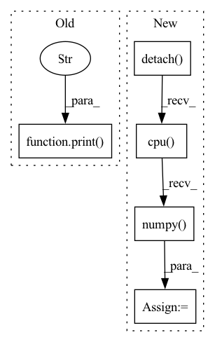

Pattern ID :16554
Before Change
attr_batch = ig_explainer.attribute(test_images, baselines=baseline_features)
current_attribution[n_batch*batch_size:(n_batch*batch_size+len(test_images))] = attr_batch.cpu().numpy()
attribution_delta = np.sum((current_attribution - prev_attribution)**2)
print(f"\n Epoch {epoch + 1}/{n_epochs} \t train loss {train_loss:.3g} \t val loss {val_loss:.3g} \t "
f"attribution delta {attribution_delta:.3g}" )
attribution_deltas.append(attribution_delta.data)
prev_attribution = current_attribution
After Change
ig_explainer = IntegratedGradients(auxiliary_encoder)
dl_explainer = DeepLift(auxiliary_encoder)
ig_attr_batch = ig_explainer.attribute(test_images, baselines=baseline_features)
dl_attr_batch = dl_explainer.attribute(test_images, baselines=baseline_features).detach()
ig_attribution[n_batch * batch_size:(n_batch * batch_size + len(test_images))] = ig_attr_batch.cpu().numpy()
dl_attribution[n_batch * batch_size:(n_batch * batch_size + len(test_images))] = dl_attr_batch.cpu() .numpy()
//plot_image_saliency(test_images[0], ig_attr_batch[0])
//plot_image_saliency(test_images[0], dl_attr_batch[0])
print(np.sum(np.abs(ig_attribution-dl_attribution)))
In pattern: SUPERPATTERN
Frequency: 5
Non-data size: 5
Instances Fragment ID: 55726774
Project Name: jonathancrabbe/label-free-xai
Commit Name: d06296865f4b015262b9fea2367805e8e684dc6e
Time: 2021-11-25
Author: jonathan.cr1302@gmail.com
File Name: experiments/mnist.py
M Class Name: AnonimousClass
N Class Name: AnonimousClass
M Method Name: denoiser_mnist(4)
N Method Name: denoiser_mnist(4)
M Parent Class:
N Parent Class:
M File Name: experiments/mnist.py
N File Name: experiments/mnist.py
M Start Line: 30
M End Line: 68
N Start Line: 48
N End Line: 75
Before Change
if diff_count == 1.0:
diff_numpy = diff.numpy()
index_list = np.where(diff_numpy >= 1.0)
print("index_list:" , index_list) if debug else None
index = index_list[1][0]
if index not in worker_type_list and index not in supply_type_list:
previous_bo.append(index)
After Change
index = torch.nonzero(diff, as_tuple=True)[-1]
print("index:", index) if debug else None
index = index.detach().cpu() .numpy() .tolist()
previous_bo.extend(index)
return previous_bo
Fragment ID: 55726772
Project Name: liuruoze/mini-alphastar
Commit Name: a115d8c35ded3fa3d608df5576d72a17cf941787
Time: 2021-12-10
Author: liuruoze@163.com
File Name: alphastarmini/lib/utils.py
M Class Name: AnonimousClass
N Class Name: AnonimousClass
M Method Name: calculate_build_order(3)
N Method Name: calculate_build_order(3)
M Parent Class:
N Parent Class:
M File Name: alphastarmini/lib/utils.py
N File Name: alphastarmini/lib/utils.py
M Start Line: 126
M End Line: 145
N Start Line: 111
N End Line: 135
Before Change
r0 = ws_layer.r.clone()
tau0 = ws_layer.tau.clone()
ratio_sign_0 = np.mean(torch.sign(ws_layer.forward_sign).detach().cpu().numpy())
print(f"ratio exec init: {(ratio_sign_0 + 1)/2 :.3f}" )
dataset = WSDataset(true_time_series.T)
trainer = nt.trainers.RegressionTrainer(
model,After Change
with torch.no_grad():
W0 = ws_layer.forward_weights.clone().detach().cpu().numpy()
sign0 = ws_layer.forward_sign.clone().detach().cpu() .numpy()
mu0 = ws_layer.mu.clone()
r0 = ws_layer.r.clone()
tau0 = ws_layer.tau.clone()
if ws_layer.force_dale_law: Fragment ID: 55726773
Project Name: neurotorch/neurotorch
Commit Name: a19976d80f57c54d66a936925f12b6f25f452bb8
Time: 2022-09-28
Author: 50332514+JeremieGince@users.noreply.github.com
File Name: tutorials/time_series_forecasting_wilson_cowan/main_dale.py
M Class Name: AnonimousClass
N Class Name: AnonimousClass
M Method Name: train_with_params(20)
N Method Name: train_with_params(20)
M Parent Class:
N Parent Class:
M File Name: tutorials/time_series_forecasting_wilson_cowan/main_dale.py
N File Name: tutorials/time_series_forecasting_wilson_cowan/main_dale.py
M Start Line: 45
M End Line: 152
N Start Line: 51
N End Line: 168
Before Change
def calculate_unit_counts_bow_numpy(obs):
unit_counts = obs["unit_counts"]
print("unit_counts:" , unit_counts) if debug else None
unit_counts_bow = np.zeros((1, SFS.unit_counts_bow))
for u_c in unit_counts:
unit_type = u_c[0]
After Change
def calculate_unit_counts_bow_numpy(obs):
ret = calculate_unit_counts_bow(obs)
ret = ret.detach().cpu() .numpy()
return ret
Fragment ID: 55726776
Project Name: liuruoze/mini-alphastar
Commit Name: a115d8c35ded3fa3d608df5576d72a17cf941787
Time: 2021-12-10
Author: liuruoze@163.com
File Name: alphastarmini/lib/utils.py
M Class Name: AnonimousClass
N Class Name: AnonimousClass
M Method Name: calculate_unit_counts_bow_numpy(1)
N Method Name: calculate_unit_counts_bow_numpy(1)
M Parent Class:
N Parent Class:
M File Name: alphastarmini/lib/utils.py
N File Name: alphastarmini/lib/utils.py
M Start Line: 100
M End Line: 119
N Start Line: 98
N End Line: 100
Before Change
try:
_, s, vh = linalg.svd(matrix)
except RuntimeError as e:
print("SVD fails, adding small I to matrix and trying again..." )
matrix += torch.eye(matrix.shape[0]) * eps
_, s, vh = linalg.svd(matrix)
v = vh.transpose(-2, -1).conj()
After Change
try:
_, s, vh = linalg.svd(matrix)
cond = np.linalg.cond(matrix.detach().cpu().numpy() )
print(f"cond: {cond}")
except RuntimeError as e:
print(matrix.shape) Fragment ID: 55726777
Project Name: ais-bonn/vp-suite
Commit Name: 0eac560889647e79cd34af7340c77a63ae985da6
Time: 2021-07-21
Author: boltres@ais.uni-bonn.de
File Name: utils.py
M Class Name: AnonimousClass
N Class Name: AnonimousClass
M Method Name: symmat_sqrt(2)
N Method Name: symmat_sqrt(2)
M Parent Class:
N Parent Class:
M File Name: utils.py
N File Name: utils.py
M Start Line: 29
M End Line: 31
N Start Line: 28
N End Line: 33